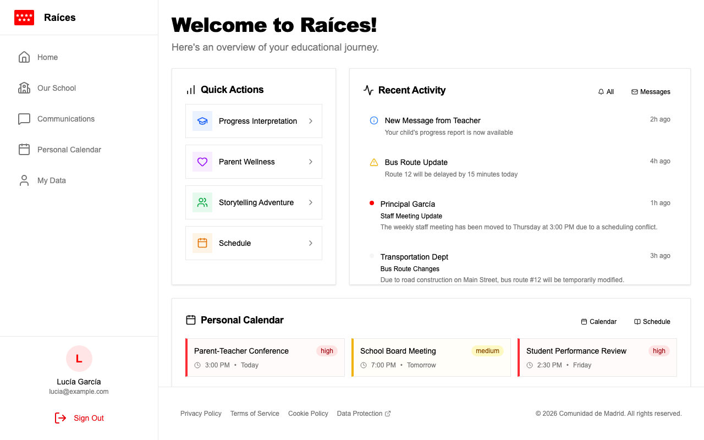
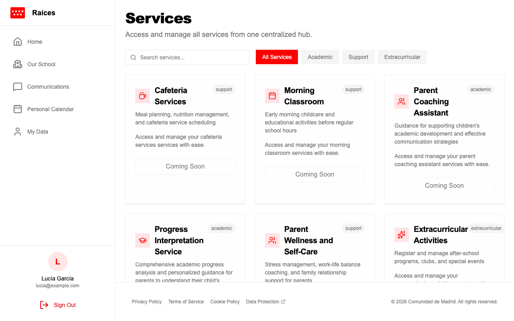

Roots reimagines the school–family portal: schedules, messages and services in one place, plus AI tutors, a storyteller that illustrates as it speaks, and a wellness coach for parents.
View on GitHubSee the services
Each one is a real-time voice or chat session.
Children co-create a story out loud while DALL·E 3 illustrations stream in live.
An AI grandmaster that explains the why behind every move.
Step-by-step help that adapts to the child's level.
Conversational practice with multilingual voice agents.
24/7 coaching for stress, routines and family communication.
Turns grades and reports into plain-language guidance for parents.

Open source under Apache-2.0, with CI, security audits and secret scanning on every push.